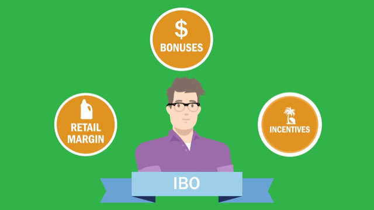
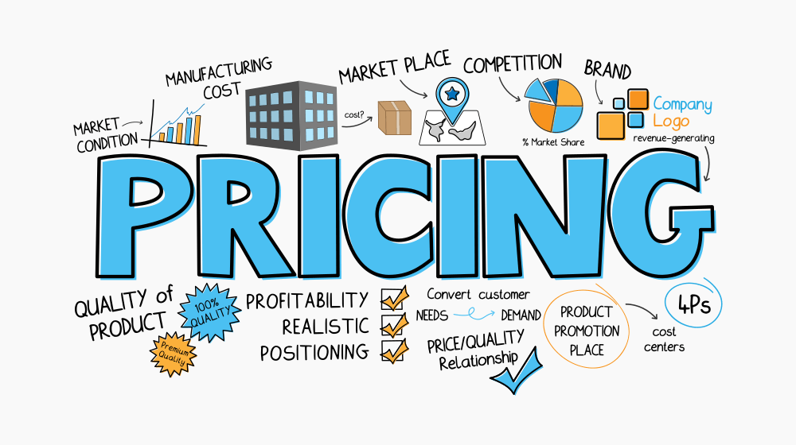

Business Reqiurement
Amway business is running smoothly but there are some things that company need to change and improve. As we know the products of Amway are more effective, healthy and organic, company wants to increase its sells and number of IBOs. To leave the good impression on people and provide high quality of products, company need two main business improvement. They are:
- Increase the number of IBOs (Independent Business owner) 
- Increase the quantity of retails
As previously mention Amway creates IBOs to sells products instead of doing marketing. When a person registered as an IBO in Amway, he/she can buy products directly from Amway online store in cheap price than its retail price. One IBO of Amway can sponsor other to join Amway and its continued. Amway gives some bonuses and incentives to their IBOs as per their PV and BV. 1 in 125 IBOs are millionaires because of Amway. Independent Business Owners (IBOs) are just that: independent. They are not "in Amway" but powered by Amway with a robust IBO Compensation Plan. An IBO and Amway are parties to a contract, which contains rules and responsibilities that govern the relationship. The main aim to increase the number of IBOs is create a brilliant impression about company in the hearts of people. To introduce the products and its quality. One of the main intentions to increase the IBOs is to create a fixed-customers for the company.

Amway has good retail of its product. The maximum sale of Amway products is due to its IBOs members. An IBO of Amway can purchase every product but it quite difficult for the people who are not its IBO. Amway, the world’s largest direct seller, today announced sales of $8.4 billion USD for the year ending Dec. 31, 2019, down 5 percent from 2018 figures. China, Amway’s largest market, saw significant declines in the overall direct selling industry, yet Amway was able to improve market share and move up a spot to become the country’s number two direct selling company. Because of covid-19 as well the supplement of Amway was on high demand in china. Since its products are not easily available to all people, Amway company has decided to improve its system to make all the products available for every general people. To increase the quantity of retails Amway has take several steps but now it wants some more strong steps to do it.
Functional requirements
A functional requirement may be a portrayal of the benefit that the software must offer. It depicts a software or its component. A work is nothing but inputs to the software package, its behavior, and yields. It can be a calculation, information control, commerce handle, client interaction, or any other particular usefulness which characterizes what work a framework is likely to perform. There are some business requirements to improve the business than before. To meet those requirements, we need to develop some functional requirements of the business. These functional requirements are the steps by which company can meet goals. Some of the functional requirements are as follow:
- Increase Social Media Posting
- Open Online Store
- Increase Mail Subscription for detailed Enquiry
- Add a blog to the website about benefits of becoming IBO
- Decrease the price of products
Social media can offer assistance your business to: draw in clients, get client input and construct client devotion, increment income by building customer networks and advertising, develop your brand. Compared to other companies, social post of Amway company is not seen frequently. Amway need to increase social posting about its products and facilities. Amway can state about IBO and its benefits that company provides to increase the number of IBOs as well as its retail quantity. In this information age, social media posting plays a vital role for advertisement.

Amway provide products to its IBOs via register online website due to which sale quantity is limited. Amway need to open online store for general people as well which can soar the sale quantity of the business. Opening online store allow general peoples to buy quality products of Amway.

Amway company is a direct selling company hence, the enquiry about its product and IBO facility are more. To handle all the query, Amway need to increase it mail subscription/reply. Mail subscription plays vital role in business development in this 21st century. People want detailed information before involving or buying products. Mail subscription also act as connecter between business and customers.
Blog are casual articles composed for the reason of appearing thought administration and skill on the theme. They are incredible way to create new substance on website and give catalyst for e-mail showcasing, social media advancement to drive look activity to your website. Even Amway had blog about company and its products, they need to add blog about benefits of becoming IBO, to increase the number of IBOs in the business. Having a blog in the website not only provide information about company but also build the trust among people.

As mentioned early, the products of Amway are expensive compared to other products. Even though products of Amway are organic, they should decrease the price of the products. Decreasing the price of products can increase the quantity of retail. When the price of product is cheap, people will switch to organic and healthy products compared to other market products.
